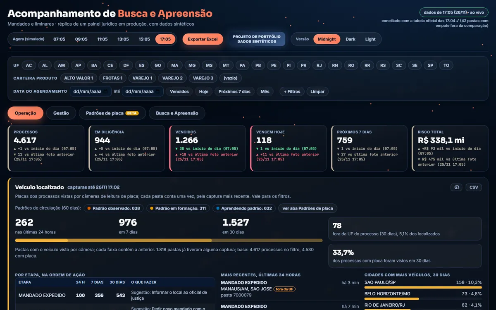

Acompanhamento de busca e apreensão
PythonpandasLeafletChart.jsSheetJS
Paridade em 52 combinações
O JavaScript do painel e uma referência em Python dão os mesmos números em 52 combinações de filtros
✓ Conciliação com a tabela oficial✓ Travas de publicação✓ 226 testes
- O problema
- O jurídico precisa saber o que vence hoje, onde cada processo trava e onde o veículo foi visto.
- O que o painel responde
- Prazos por etapa, escada de mandados, carteira por advogado, mapa por UF, a planilha do jurídico com 12 seções e metas, veículos vistos por câmera e os padrões e trajetos de cada placa.
- Resultado
- Um painel completo que segue publicando mesmo quando uma fonte falha, e diz qual fonte usou.
Técnica: Regra de etapas + travas + padrões de placa
Validação: Paridade JS × Python, conciliação diária com a tabela oficial e travas testadas em horários com falha simulada.
- Regra que escolhe a etapa de cada processo
- Payload em delta: 44 fotos num HTML de ~920 KB
- Padrões e trajetos de placa: células de ~330 m, sequência A→B→C, trajetos repetidos, haversine
- Exportação .xlsx no navegador com os filtros ativos
226 testes automatizados, rodando a cada push
